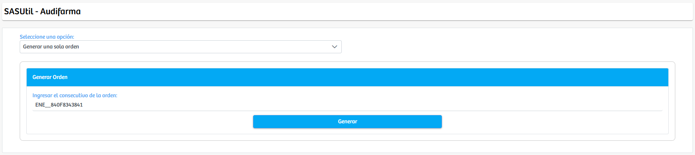
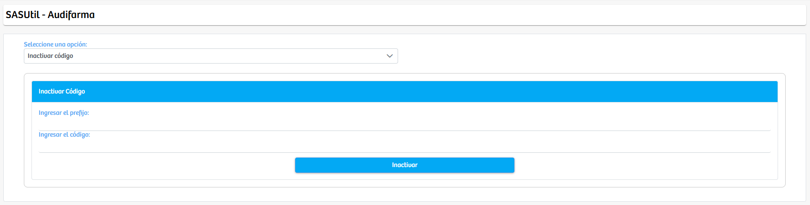
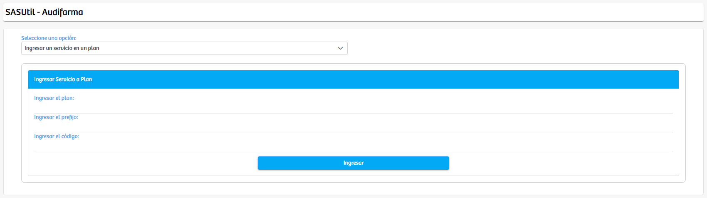

Modulos Sas-Web
Funcionalidades
Audifarma
El módulo Audifarmacentraliza un conjunto de funciones operativas relacionadas con la gestión de órdenes, códigos y servicios asociados a los planes de medicamentos. La interfaz inicial presenta un selector principal desde el cual el usuario define la acción que desea ejecutar, y con base en esa elección, el sistema adapta dinámicamente la vista para mostrar únicamente los campos y opciones necesarios para completar el proceso seleccionado. Esta estructura permite que el módulo sea flexible y se enfoque en una única tarea a la vez, garantizando claridad y evitando sobrecarga visual.

Cuando se elige la opción Generar una sola orden, el sistema despliega un formulario simplificado que solicita exclusivamente el consecutivo de la orden que se desea procesar. Después de ingresar dicho consecutivo, el usuario puede generar la orden por medio del botón correspondiente, permitiendo que el sistema procese individualmente ese registro sin afectar otros consecutivos.
En el caso de las opciones Inactivar código o Activar código, la vista cambia para mostrar dos campos esenciales: el prefijo y el código. Estos datos permiten identificar con precisión el elemento que se desea activar o inactivar dentro del sistema. Una vez ingresada la información, el usuario ejecuta la acción mediante el botón asignado, con lo cual el sistema actualiza el estado del código dentro de la estructura de Audifarma.
Por su parte, las opciones Ingresar un servicio en un plan y Quitar un servicio de un plan habilitan un conjunto de tres campos destinados a gestionar la relación entre servicios y planes. El sistema solicita identificar el plan, definir el prefijo correspondiente y especificar el código del servicio que se desea asociar o eliminar. Después de completar estos datos, el usuario puede ejecutar la acción para actualizar la disponibilidad del servicio en el plan seleccionado, permitiendo una administración directa y precisa de la oferta de servicios vinculados a cada plan.
En conjunto, el módulo Audifarma actúa como una herramienta operativa ágil y segmentada, que permite ejecutar acciones específicas relacionadas con órdenes, códigos y servicios sin necesidad de navegar entre múltiples pantallas. Cada funcionalidad se presenta de forma independiente y orientada a la acción, facilitando procesos administrativos que requieren rapidez, exactitud y control sobre la información registrada.